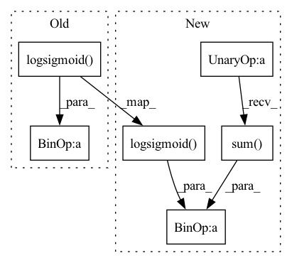

Pattern ID :29166

Before Change
distance_neg = self.distance_fn(input, neg) // (batch_size, num_neg_samples)
distance_pos = distance_pos.sum(dim=-1) // (batch_size,)
distance_neg = distance_neg.sum(dim=-1) // (batch_size,)
loss = - F.logsigmoid(-distance_pos) - F.logsigmoid(distance_neg) // (batch_size,)
if self.reduction == "mean":
loss = loss.mean()
After Change
distance_pos = pos // (batch_size)
distance_neg = neg // (batch_size, num_neg_samples)
loss_pos = - F.logsigmoid(-distance_pos) // (batch_size,)
loss_neg = - F.logsigmoid(distance_neg) // (batch_size, num_neg_samples)
loss = loss_pos + loss_neg.sum(dim=1) // (batch_size,)
if self.reduction == "mean":
loss = loss.mean()
In pattern: SUPERPATTERN
Frequency: 3
Non-data size: 6
Instances
Fragment ID: 85853006
Project Name: tky823/dnn-based_source_separation
Commit Name: fd496b913dcbe1d7bcacb03fbabe2cf5daffab8f
Time: 2022-02-10
Author: delta9guitar97@gmail.com
File Name: egs/tutorials/word2vec/src/adhoc_criterion.py
M Class Name: NegativeSamplingWithDistanceLoss
N Class Name: NegativeSamplingWithDistanceLoss
M Method Name: __call__(4)
N Method Name: __call__(4)
M Parent Class:
N Parent Class:
M File Name: egs/tutorials/word2vec/src/adhoc_criterion.py
N File Name: egs/tutorials/word2vec/src/adhoc_criterion.py
M Start Line: 38
M End Line: 44
N Start Line: 44
N End Line: 57
'>
Before Change
pos_dot = torch.sum(input * pos, dim=1) // (batch_size,)
neg_dot = torch.sum(input.unsqueeze(dim=1) * neg, dim=(1,2)) // (batch_size,)
loss = - F.logsigmoid(pos_dot) - F.logsigmoid(-neg_dot) // (batch_size,)
if self.reduction == "mean":
loss = loss.mean()
After Change
pos_dot = torch.sum(input * pos, dim=1) // (batch_size,)
neg_dot = torch.sum(input.unsqueeze(dim=1) * neg, dim=2) // (batch_size, num_neg_samples)
loss_pos = - F.logsigmoid(pos_dot) // (batch_size,)
loss_neg = - F.logsigmoid(-neg_dot) // (batch_size, num_neg_samples)
loss = loss_pos + loss_neg.sum(dim=1) // (batch_size,)
if self.reduction == "mean":
loss = loss.mean()
'>
Fragment ID: 85853005
Project Name: tky823/dnn-based_source_separation
Commit Name: fd496b913dcbe1d7bcacb03fbabe2cf5daffab8f
Time: 2022-02-10
Author: delta9guitar97@gmail.com
File Name: egs/tutorials/word2vec/src/adhoc_criterion.py
M Class Name: NegativeSamplingLoss
N Class Name: NegativeSamplingLoss
M Method Name: __call__(4)
N Method Name: __call__(4)
M Parent Class:
N Parent Class:
M File Name: egs/tutorials/word2vec/src/adhoc_criterion.py
N File Name: egs/tutorials/word2vec/src/adhoc_criterion.py
M Start Line: 17
M End Line: 17
N Start Line: 17
N End Line: 19
'>
Before Change
if not self.dns:
weight = self._cal_weight(neg_score, log_neg_prob)
notpadnum = torch.logical_not(torch.isinf(pos_score)).float().sum()
output = torch.nan_to_num(F.logsigmoid(pos_score), nan=0.0).sum() / notpadnum
neg_score = F.softplus(neg_score) * weight
neg_score_sum = neg_score.sum(-1)
if pos_score.dim() == neg_score.dim()-1:
After Change
weight = self._cal_weight(neg_score, log_neg_prob)
padding_mask = torch.isinf(pos_score)
// positive
pos_loss = F.logsigmoid(pos_score)
pos_loss.masked_fill_(padding_mask, 0.0)
pos_loss = pos_loss.sum() / (~padding_mask).sum()
// negative
neg_loss = F.softplus(neg_score) * weight
neg_loss = neg_loss.sum(-1)
// mask
'>
Fragment ID: 85853009
Project Name: ustcml/recstudio
Commit Name: fdd37471c7a73d0c5c0efb207c5ec53e563e6fa5
Time: 2022-09-08
Author: chenxiaolong0502@163.com
File Name: recstudio/model/loss_func.py
M Class Name: BinaryCrossEntropyLoss
N Class Name: BinaryCrossEntropyLoss
M Method Name: forward(6)
N Method Name: forward(6)
M Parent Class: PairwiseLoss
N Parent Class: PairwiseLoss
M File Name: recstudio/model/loss_func.py
N File Name: recstudio/model/loss_func.py
M Start Line: 112
M End Line: 119
N Start Line: 112
N End Line: 127